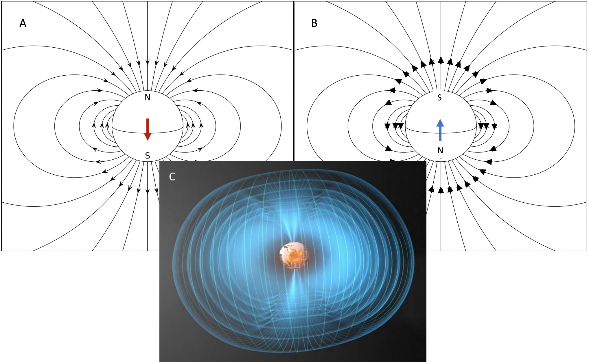
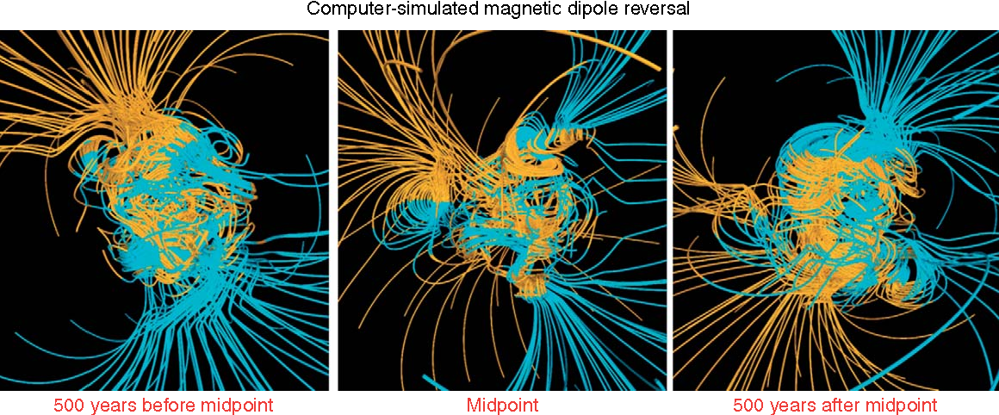
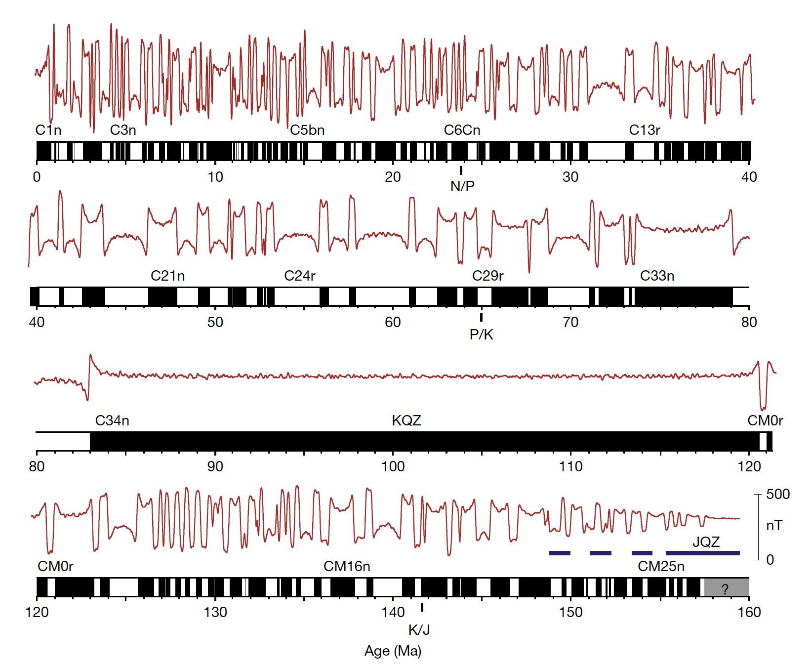
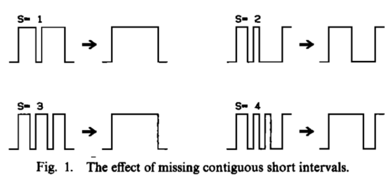
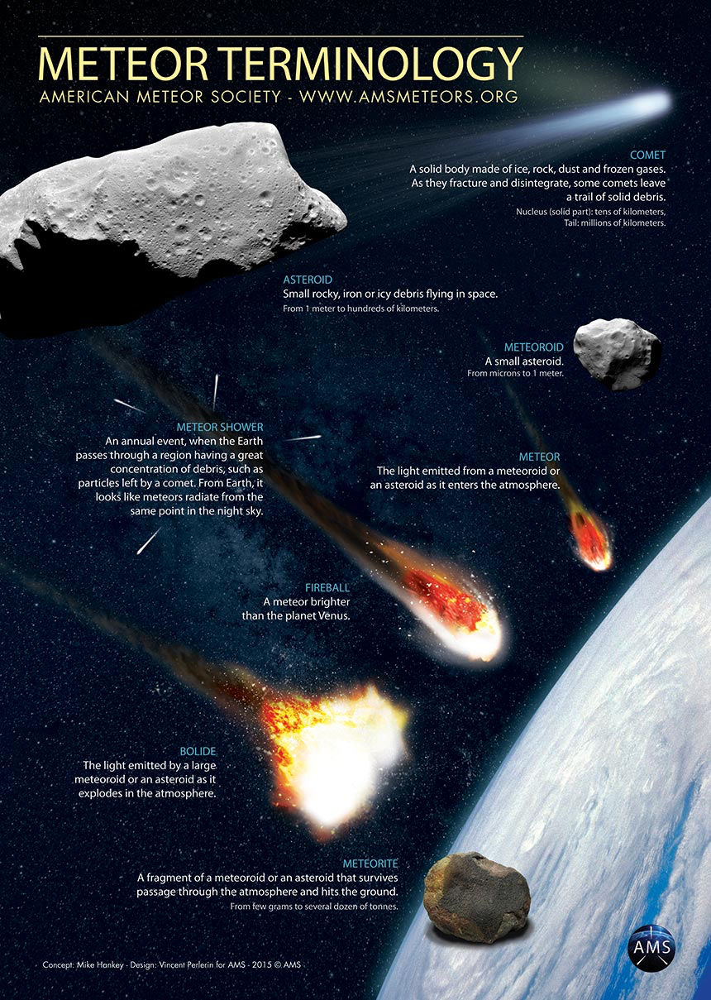

6.2 Examples of Random Earth Processes¶
Outline:
A few examples of Earth System processes that are random (there are many more)
Radioactive Isotope Decays¶
Elements on the periodic table come in different “flavors” called isotopes. All isotopes of a given element will have the same number of protons, but can have different numbers of neutrons. Some isotopes are unstable and will decay, meaning that they will go through a process to gain or lose neutrons to become a stable isotope. The decay of radioactive isotopes follows a Poisson distribution.
Watch this video on Radioactive Decay:

The half-life of an unstable isotope is the time that it takes for half of the atoms in your sample to decay to the stable form. For example the half-life (\(t_{1/2}\)) of Carbon-14 is 5730 years (or 180,825,048,000 seconds). The average number of decays/second is called the activity, \(\lambda=Np\) where \(N\) is the number of parent isotope nuclei in our hypothetical samples (i.e. the number of potential decays, let’s say \(N=1 \times 10^{12}\) atoms) and \(p=\frac{\ln2}{t_{1/2}}\) is the probability that an atom will decay. So $\lambda=Np = 1 \times 10^{12} \times \ln2/ 1.8 \times 10^{11} = 3.8 $ decays/second.
The theoretical probability curve of number of decay events (\(k\)) is \(P(k)=\frac{\lambda^{k} e^{-\lambda}}{k!}\), the Poisson!
Geomagnetic Reversals¶
Earth has a magnetic field that is generated in the outer core and is dominantly a dipole that is aligned with Earth’s spin axis:

Earth’s magnetic field varies with time. The most dramatic aspect of this variation is that it reverses its polarity. The field structure in both the normal and reversed states is dipolar (like a bar magnetic), but the pole locations are switched. The timescale that it takes for the field to reverse is relatively short (a few thousand years) compared to the time that it is typically in a given polarity. Earth’s magnetic reverses due to complex magnetohydrodynamic processes associated with convection of liquid iron within the outer core. These processes can be captured in numerical models such as this one:

Source: Glatzmaier and Coe (2015) DOI:10.1016/b978-0-444-53802-4.00146-9
The Geomagnetic Polarity Time Scale is the record of geomagnetic reversals over the past ~150 million years largely derived from seafloor magnetic anomalies, but also records developed from rocks on land:

Source: Gee and Kent (2007) “Source of Oceanic Magnetic Anomalies and the Geomagnetic Polarity Timescale”
You have now dealt in detail with data that is developed by research vessels towing a magnetometer measure the marine magnetic anomalies. As you saw, the history of reversals is recorded by the oceanic crust as it forms at the ridge with both sides of the ridge record this pattern of reversals leading to symmetry about the ridge. Both the marine magnetic anomalies and records of the magnetic field on land in sedimentary rocks and lava flows have led to the development of the geomagnetic polarity time scale (GPTS).
Geomagnetic reversals are often interpretted to behave like a Poisson process. A Poisson process meets the following criteria:
Events are independent of each other.
The average rate (events per time period) is constant.
Two events cannot occur at the same time.
So the probability of the number of reversal events (\(k\)) is \(P(k)=\frac{\lambda^{k} e^{-\lambda}}{k!}\), where \(\lambda\) is the average reversal rate which has been \(\sim4\) reversals/Myr for the past 10 Ma.
The probability of a polarity chron duration i.e. the amount of time between reversals is then given by the Gamma distribution: $ P(x) = \frac{x^{\alpha-1}e^{-x/\theta}}{\Gamma (\alpha) \theta^{\alpha}} $.
\(\theta\) is the expected time between reversals and we will follow McFadden (1984) and define \(\theta = \mu / \alpha\) where \(\mu\) is the average chron duration. A value for \(\alpha\) greater than one can be interpreted either as an artifact linked to some short intervals missing in the GPTS or to some short term memory within the dynamo that would inhibit a second reversal just after a first one has occurred. McFadden (1984) use a value for \(\alpha\) of 1.2.

Source: McFadden (1984) “Statistical Tools for the Analysis of Geomagnetic Reversal Sequence”
Observing meteors¶
The number of meteors (meteoroids, comets, or asteroids that enter Earth’s atmosphere and burn up) can be modeled with a Poisson distrubution. Meteors events are indepedent of each other and the rate of meteors is approximately constant for a given shower.

From https://www.amsmeteors.org/meteor-showers/meteor-faq/:¶
How big are most meteoroids? How fast do they travel? The majority of visible meteors are caused by particles ranging in size from about that of a small pebble down to a grain of sand, and generally weigh less than 1-2 grams. Those of asteroid origin can be composed of dense stony or metallic material (the minority) while those of cometary origin (the majority) have low densities and are composed of a “fluffy” conglomerate of material, frequently called a “dustball.” The brilliant flash of light from a meteor is not caused so much by the meteoroid’s mass, but by its high level of kinetic energy as it collides with the atmosphere.
Meteors enter the atmosphere at speeds ranging from 11 km/sec (25,000 mph), to 72 km/sec (160,000 mph!). When the meteoroid collides with air molecules, its high level of kinetic energy rapidly ionizes and excites a long, thin column of atmospheric atoms along the meteoroid’s path, creating a flash of light visible from the ground below. This column, or meteor trail, is usually less than 1 meter in diameter, but will be tens of kilometers long.
The wide range in meteoroid speeds is caused partly by the fact that the Earth itself is traveling at about 30 km/sec (67,000 mph) as it revolves around the sun. On the evening side, or trailing edge of the Earth, meteoroids must catch up to the earth’s atmosphere to cause a meteor, and tend to be slow. On the morning side, or leading edge of the earth, meteoroids can collide head-on with the atmosphere and tend to be fast.
What is a meteor shower? Does a shower occur “all at once” or over a period of time? Most meteor showers have their origins with comets. Each time a comet swings by the sun, it produces copious amounts of meteoroid sized particles which will eventually spread out along the entire orbit of the comet to form a meteoroid “stream.” If the Earth’s orbit and the comet’s orbit intersect at some point, then the Earth will pass through this stream for a few days at roughly the same time each year, encountering a meteor shower. The only major shower clearly shown to be non-cometary is the Geminid shower, which share an orbit with the asteroid (3200 Phaethon): one that comes unusually close to the sun as well as passing through the earth’s orbit. Most shower meteoroids appear to be “fluffy”, but the Geminids are much more durable as might be expected from asteroid fragments.